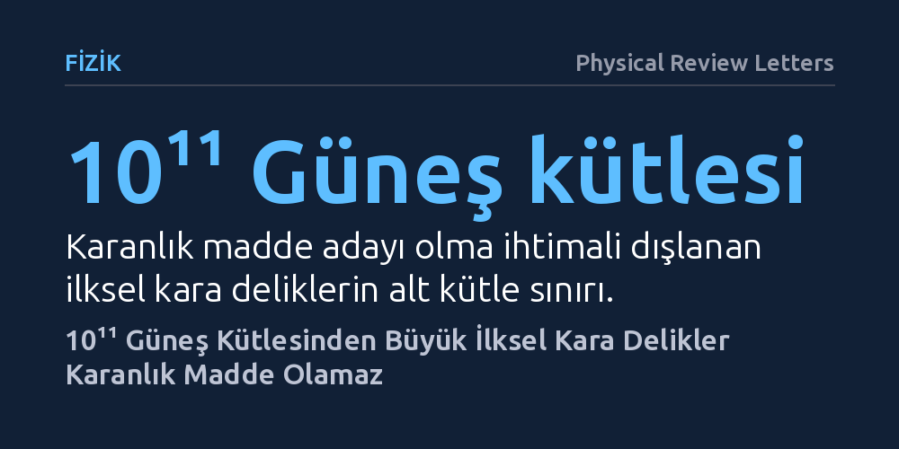

FIZIK · Physical Review Letters · 2026-10-27
Araştırmacılar, erken evrende oluştuğu varsayılan devasa ilksel kara deliklerin karanlık madde olup olamayacağını inceledi. Yapılan hesaplamalar, 10¹¹ Güneş kütlesinden ağır kara deliklerin gözlem sınırlarını aşan dalgalanmalar yaratarak karanlık madde adayı olmaktan çıktığını gösterdi.
Evrendeki kayıp kütlenin aşırı devasa kara deliklerden oluşabileceği fikrini çürüterek karanlık madde arayışındaki ihtimalleri daraltıyor.

Evrende gözlemlediğimiz yıldızlar, gezegenler ve gaz bulutları, toplam kütle ve enerjinin yalnızca küçük bir kısmını oluşturuyor. Gökadaların dönüş hızlarından evrenin genişleme dinamiklerine kadar birçok gözlem, ışıkla etkileşime girmeyen devasa miktarda bir karanlık madde varlığına işaret ediyor. Fizikçiler uzun süredir bu gizemli bileşenin henüz keşfedilmemiş atom altı parçacıklardan oluştuğunu varsayarak yer altı dedektörlerinde deneyler yürütüyor, ancak henüz somut bir ize rastlanabilmiş değil.
Bu belirsizlik, araştırmacıları karanlık maddenin parçacıklardan ziyade Büyük Patlama'nın hemen ardından oluşan ilksel kara deliklerden kaynaklanabileceği fikrine yöneltti. Özellikle Güneş'ten yüz milyarlarca kat daha ağır olan devasa kara deliklerin, evrendeki kayıp kütleyi açıklamak için güçlü bir alternatif oluşturabileceği öne sürülüyordu. Asıl soru, bu derece devasa kütleli ilksel kara deliklerin evrenin erken döneminde gerçekten var olup olamayacağı ve karanlık maddeyi oluşturup oluşturamayacağıydı.
Aşırı devasa kara deliklerin varlığını doğrudan teleskoplarla gözlemlemek mümkün olmadığından, araştırmacılar bu cisimlerin erken evrende bırakmış olması gereken izlere odaklandı. Büyük Patlama'dan 380 bin yıl sonra ortaya çıkan ve bugün tüm uzayı homojen biçimde dolduran kozmik mikrodalga arka plan ışıması, erken evrenin koşullarını anlamak için en güvenilir bilgi kaynağıdır. Bu ışımanın sıcaklık haritasındaki mikroskobik dalgalanmalar, maddenin ve enerjinin o dönemde uzaya nasıl dağıldığını hassas biçimde gösterir.
Çalışmada teorik kozmoloji modelleri temel alınarak, 10¹¹ Güneş kütlesini aşan ilksel kara deliklerin varlığının uzayda ne tür eş-eğrilik pertürbasyonları üreteceği hesaplandı. Eş-eğrilik pertürbasyonları, toplam enerjiyi değiştirmeden madde ile ışınım arasındaki yerel dengesizlikleri ifade eder. Araştırmacılar, bu kuramsal dalgalanmaları modern gözlemevlerinin sağladığı hassas kozmik mikrodalga arka plan ölçüm sınırlarıyla kıyasladı.
Yapılan hassas hesaplamalar, 10¹¹ Güneş kütlesinden daha ağır ilksel kara deliklerin erken evrende çok güçlü dalgalanmalar yaratacağını ortaya koydu. Bu dalgalanmaların büyüklüğü, günümüz gözlemlerinin belirlediği sınırların açıkça üzerine çıkıyor. Eğer bu ağırlıktaki kara delikler evrendeki karanlık maddeyi oluşturacak bollukta bulunsaydı, kozmik arka plan ışımasında belirgin ve kolayca tespit edilebilir bozulmalara yol açmaları gerekirdi.
Araştırma ekibi, elde ettikleri veriler doğrultusunda bu nesnelerin ürettiği dalgalanmaların mevcut kozmik mikrodalga arka plan sınırlarını aştığını belirterek, bu kütle aralığındaki ilksel kara deliklerin karanlık madde olma ihtimalini tamamen dışladı. Böylece devasa ilksel kara delikler için öne sürülen kuramsal kütle aralığı kesin bir biçimde kapanmış oldu.
Bu bulgu, karanlık maddenin doğasını tamamen aydınlatmasa da ne olmadığını netleştirerek bilim dünyasına önemli bir zaman kazandırıyor. Kozmoloji araştırmacıları artık evrendeki kayıp kütleyi açıklamak için yüz milyar Güneş kütlesinin üzerindeki aşırı büyük kara delik senaryoları üzerinde zaman ve kaynak harcamayacak.
Bundan sonraki çalışmalar, karanlık madde adayı olarak ya çok daha hafif kütle aralıklarındaki ilksel kara deliklere ya da henüz keşfedilmemiş temel parçacık modellerine yoğunlaşacak. Bilimde yanlış hipotezlerin kesin olarak elenmesi, doğru cevaba ulaşmak için atılan en kritik adımlardan biridir.